BEANS REELS 
Bean Copter Micro FPV platform workshop
01
02
03
04
05
06
07
fpv-3 "googles/ground station"
08
09
01
> > > > > > > > Part one - What is a drone?
WHAT IS A MULTICOPTER AND WHAT IS A DRONE ?
A multicopter is a mechanically simple aerial vehicle whose motion is controlled by speeding or slowing multiple downward thrusting motor/propeller units.
An unmanned aerial vehicle (UAV), commonly known as a drone, as an unmanned aircraft system (UAS), and also referred by several other names, is an aircraft without a human pilot aboard. The flight of UAVs may be controlled with various kinds of autonomy : either by a given degree of remote control from an operator, located on the ground or in another vehicle, or fully autonomously, by onboard computers
In the image we can see on the left a REAPER MILITARY UAV that is a "drone" due to his autonomous capabilities.
On the right is commercial DJI Phantom that is also a "drone" but also can be controlled in manual mode.
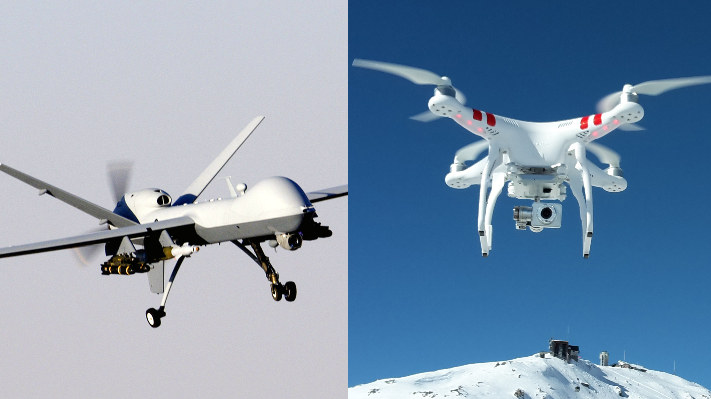
The term "drone" is lazy and inexact.
The fundamental difference between the terms “drone” and “quadcopter” is one of characterization – drone is the general term used for all unmanned aerial vehicles, though quadcopter identifies with a particular set of drones with four engines that make lift for vertical takeoff through their propellers
1. It isn't wrong to call almost any kind of remotely or self-directed vehicle a "drone."
2. All unmanned aircraft may be considered "drones."
3. It's basically impossible to come up with a currently flying example of a quadcopter that isn't an unmanned aircraft (part of an "unmanned aircraft system") and therefore, at the end of the day... a drone.
Quadcopter is drone, it’s a fact. Pretty much like bacon is pork or maybe...a cow ?
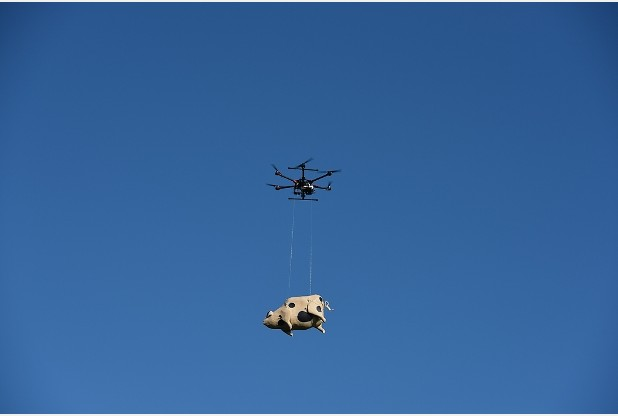
What is the difference between a multicopter and a a drone ?
A multicopter becomes a UAV or Drone when it is capable of autonomous flight. Normally this means taking the accelerometer and gyro information and combining it with barometer and GPS data so the flight controller understands not only it’s orientation but also it’s position.
What does it means ? We can program it to go somewhere autonomously do something and return home.
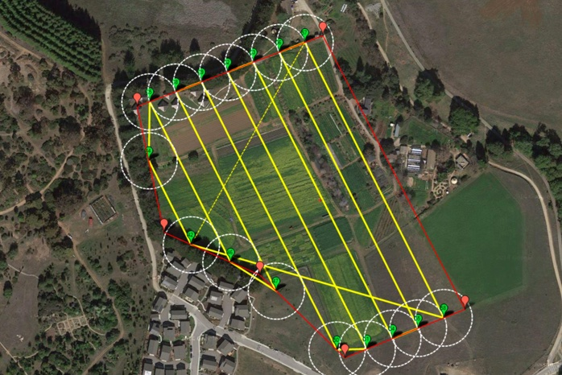
There is a video examplo of a "drone" multicopter wich can switch between "manual mode " and "autonomous mode".
02
> > > > > > > > Part two - What is FPV?
Usually we fly RC models in parks, or fields, but generally we fly by watching the model flying while controlling it on the ground.
The main thing is, we always look at the model, check its position and control it accordingly.
This is what we call LOS (line of sight) flying.
FPV (which stands for First Person View) in its simplest form regards adding a small video camera and video transmitter to your model. Then, with a video receiver and a video display (video goggles, a video monitor, or both), the pilot/copilot can view the image from the model in real time, which gives the effect of "being in the cockpit."
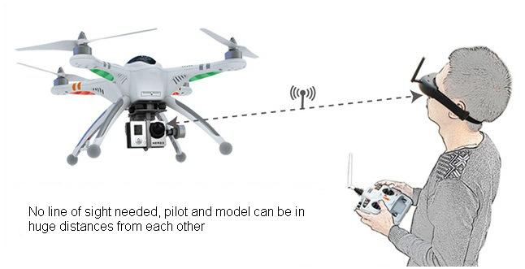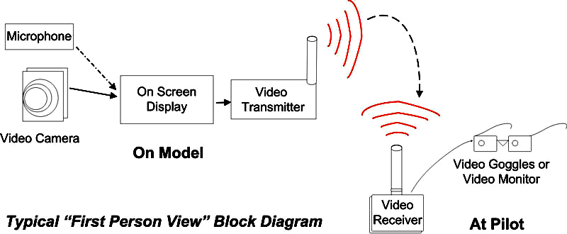
Main components (FPV gear)
- video transmitter (vtx) + antenna (air)
- micro camera (air)
- video receiver (vrx) + antenna (gnd)
- ground display unit (tv, lcd monitor, laptop display, video goggles, …)
Extended components (improvements)
- low-pass” filter (filters the unwanted frequencies, that can influence the RC link) (air)
- LC filter (filters the current fluctuations that can affect the picture quality) (air)
-ground station (integration of the vrx, monitor, video recorder and more to one unit, usually a suitcase) usually mounted on a tripod
- diversity receiver (handles input from more antennas, selects the best signal) (gnd)
- antenna tracker system (turns the receiver antenna towards the model automated)
- DVR (“digital video recorder” – records the picture coming from the vrx) (gnd)
- power bank for the groundstation (gnd)
- OSD, video information about position,orientation, altitute,etc embeded on the video image (air)
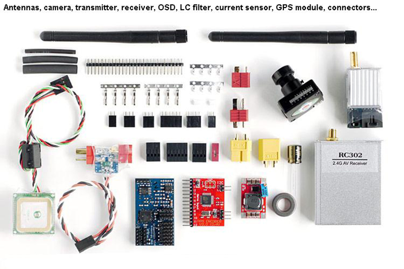
COMPONENTS ONE BY ONE: CAMERA
One of the most important components in FPV flying is the fpv camera. If the camera is not good enough for the purpose, it has effect on the whole flight. Be carefull while choose the voltage range they admit is usually small.
CCD vs CMOS
The advantage of the CCD sensors over CMOS is that there is no “rolling shutter” effect on CCD cameras. On the other side, the CMOS cameras have higher resolutions, thus, nice picture.
> > Note that the maximum horizontal lines that the analog transmitter can transmit is 576
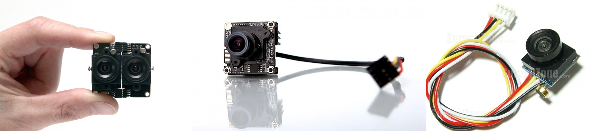
VIDEO STANDART
There are two major types of video standards that we use FPV cameras: PAL and NTSC. While the former has slightly bigger resolution, the latter has slightly slower frame rate ( that means the image get refreshed faster, very important during fast flying)
RESOLUTION
Camera resolutions are specified as TVL (TV lines) and go from 480 up to 1000. Usually, the higher the TVL value, the better the picture, even if the maximum analog transfer rate is of 576 tv lines, the superior quality built and lens, make the higher specs camera have a better final image with more focus,detail,color rate and fast change between dark/light areas.
F.O.V / CAMERA LENS
The FOV or camera angle gives us information how much angle the camera sees. The values are given in “mm” which equals to the focal length. The lesser the number, the wider the angle. The cameras that are generally used in FPV has 2.8mm lens that gives us around 90 degree angle horizontal and 80 degree angle vertical. By using a 3.6mm lens this decreases to 75/65 degrees. The more narrow the angle, the more details we see on the picture
As a good start point for beginners is to use a wide angle camera as it allows to see lot of things, but a cons it is more difficult to calculate distances
.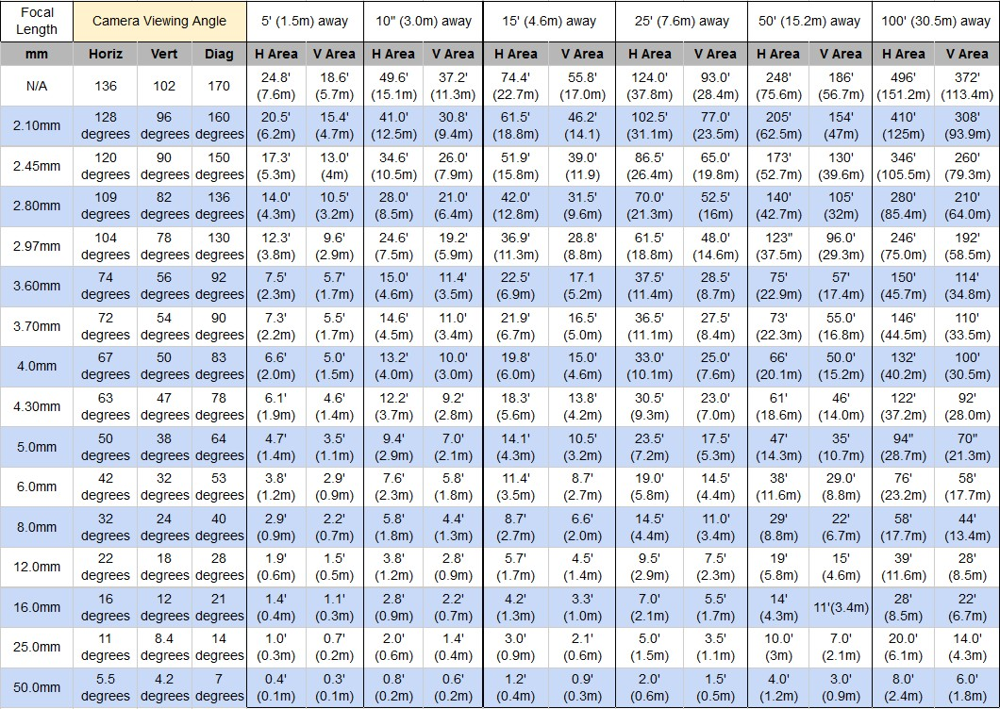
NIGHT VISION
For night flying we use cameras that have very low LUX ratings. A camera below 0.001 LUX can see nearly perfectly in the dark night.A nice camera in this family is fpv OWL micro camera (the image in this kind of camera is bitone due to what the camera sees is infrared emitance)
COMPONENTS ONE BY ONE: ANTENNA
The antenna is the essential component of every FPV system. When we say “essential” we mean it. A wrong antenna can degrade the range of the system to very low values, making flying impossible.
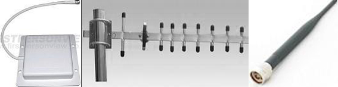
Linear are now considered by most as old school technology for FPV with the realization of circular polarization, but it still has its place for small micro aplications.
Main attributes are:
> > >polarization ( vertical, horizontal, circular)
This depicts how you mount an antenna to match the waveforms from transmitter to receiver. An omin antenna has a linear polarized waveform so when mounted upright the waveforms are transmitted vertically. The receivers antennas polarization must then match to receive a polarized signal
> > > directivity (omni, directional)
> > >SWR standing wave ratio
When a receiver is connected to an antenna the impedance of the antenna and feed line must match as close as possible for most efficient reception
> > >"gain" directivity
The two antenna characteristics, among others, that impact link performance to a large degree are directivity and polarization.A simple dipole antenna has a gain of 2.15 dbi and has a directivity pattern, in free space, shaped like a torus or donut.his can be an advantage in some circumstances but in RC systems, that “ hole in the middle” can be a real problem
THIS IS WHY YOU SHOULD NEVER POINT THE ANTENNA AT YOUR MODEL.
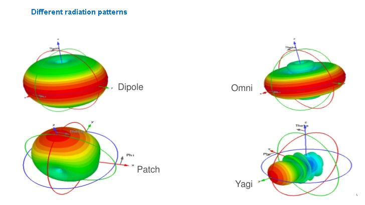
> > > bandwidth (wich band are they designed for)
An antenna designed for a specific frequency has certain characteristics at that frequency only. As the frequency is changed, plus or minus, from this center frequency, those characteristics will change to some degree
For radio systems that operate on a single frequency, bandwidth isn’t much of an issue. However, a number (if not most) of 2.4 GHz systems use spread spectrum or frequency hopping technology, which require operation over a range of frequencies. For these systems, bandwidth is significant.
Most wifi,bluetooth,rc transmitters use the 2.4 ghz bandwitdh so it is a very noise band. To get best picture quality most of people use the 5.8ghz band that gives less penetration rate but better qualitity and it is much less busy.
Most used frecuencies are
- 900mhz where the signal go easy around and penetrate walls and trees
-1.2 ghz( 1200mhz) nice penetration but antennas are big,be carefull to stay away for GPS and airplane navigation frecuencies(1227.60 1575.42, 962-1213 mhz)
-2.4ghz (used for long range fpv but you have to use another band transmitter),very crowded frecuency,much more antennas to choose
-5.8ghz, perfect for short range,easy to setup,works with 2.4ghz transmitter, very small antennas.
Here you can see the comparison in size between a 1.2ghz and 5.8 ghz antenna.
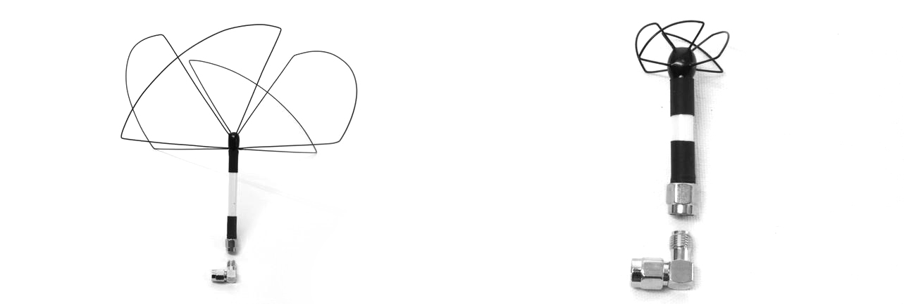
> > > material / size/ weight
> > > connector type SMA vs RP-SMA (male vs female)
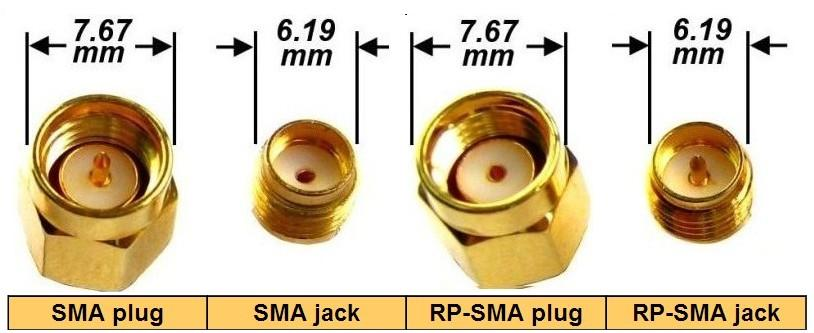
COMPONENTS ONE BY ONE: vTX,vRX)
The video transmitter is the device that transmits an analog (some digital devices exists already) signal of the fpv video camera to the ground, where a video receiver catches the signal and processes it. The signal is transmitted in SD quality, that means 576 horizontal lines.
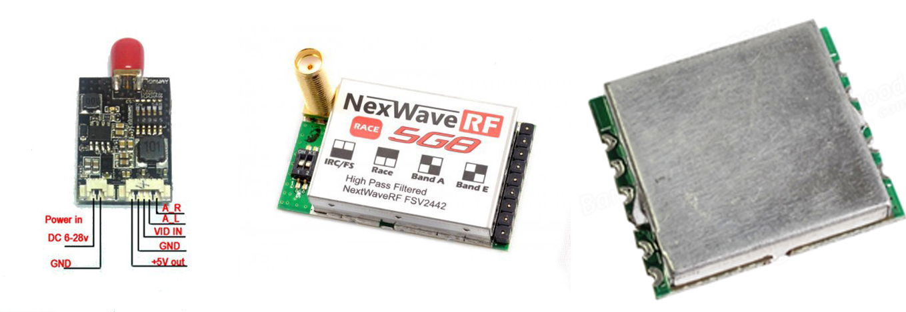
ATTRIBUTES OF vTX
-frecuency/band
-RF power
-input voltage
-antenna connector
-size weight
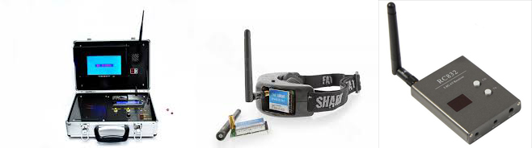
ATTRIBUTES OF vRX
-frecuency/band
-sensitivity
-noise filtering
-build (modular/cased)
-diversity
-number of AV out connectors
There are some more sophisticated solutions where one needs precise and stable control all the time. In these cases, a technology called “diversity” is used. It can be achieved either by multiplying the receiver modules (static), or by using an antenna tracker module (dynamic), that is able to track the multicopter in the air and automatically position the antenna to get the best signal.
Displays vs Googles
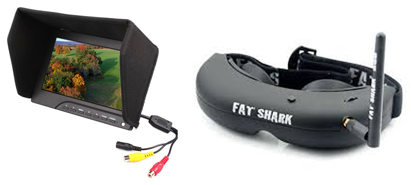
LCD > > > > > > > > > > > > > > > > > > > > > > > > > > > > > > > > > > > GOOGLES
-reflections on sunny days > > > > > > > > > > > > > > > > > > > > > > > >no reflections
-display brightness > > > > > > > > > > > > > > > > > > > > > > > > > > > > optical incompatibility
-more resolution > > > > > > > > > > > > > > > > > > > > > > > > > > > > > discomfort in view
-powering > > > > > > > > > > > > > > > > > > > > > > > > > > > > > > > > powering
-large displays > > > > > > > > > > > > > > > > > > > > > > > > > > > > > > small displays
-cabling > > > > > > > > > > > > > > > > > > > > > > > > > > > > > > > > >no cabling
Of course, loosing the picture in many cases means loosing the control and crash.
How to get the maximum range
Generally, the lower the frequency, the better is the penetration (possibility for the signal to get through). Of course again, by using high gain directional antenna, more sensitive receiver or higher RF output power will help making the penetration better.
General rule of thumb is ALWAYS to increase the antenna gain/vRX sensitivity, and AVOID increasing the vTX RF power. The reason is simple, the high RF power levels can simply affect other devices onboard, even the RX and this can lower the range for the RC link which we need to avoid.Also note that by increasing the vTX power it will get more and more hot, and as a result it can easily burn out.
A typical situation is when we use 2.4G for RC link (very widely used) and we need high penetration so we use 1.2/1.3G for video. In this case the vTX can (will) negatively affect the range of the RC link, that can get down even to 1/10 of its maximum range.
MAYDAY!! my video has bad quality
The video picture can generally be affected 2 ways, by EMI (electromagnetic interference, or RFI – radio frequency interference), coming from any onboard electronics device or by the unwanted voltage spikes, usually coming from the motors.
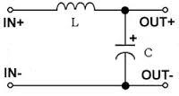
The latter can usually be cured (to a certain point) by using so-called “LC filters”. The “LC” comes from the names of the passive components used, capacitors and inductors. Making such a filter at home is relatively easy and very cheap, however, the result is not always satisfactory. A thumb of rule is to use as high capacitance and inductive components as possible.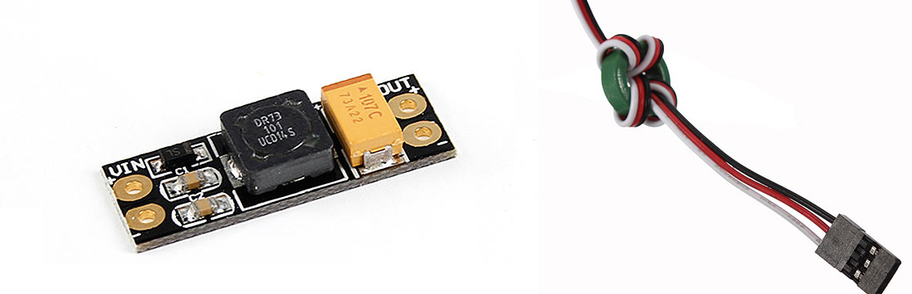
A good solution is to find the component that “makes the noise” and shield it as much as possible. The shielding can be done the easiest way by using some copper or aluminium foils for wrapping. In addition to this, we can use ferrite rings of different shapes and sizes, and twist the wires going to the transmitter around them as many times as possible. In many cases, just simply twisting the wires, going between the video components can be sufficient, to filter the noise.
about FPV legality and safety
Always obey the law when flying, and fly safely! Laws vary from locality to locality. Most video transmitters used for FPV flying require an amateur radio license to operate legally, depends mainly on wich frecuencies/power you use. FPV hobby frecuencies are 800-900mhz, 1.2ghz ,2,4ghz, 5,8 ghz
Common illegalities:
- illegal frequency usage, or transmitting on an allowed frecuency with not allowed power levels ( HAM license existence)
-accidentally powering the vTx on a frecuency that is already used by someone else, causing to blind him and crash.
-damage caused by unattendance or technical problems
-illegal usage of the airspace
-illegal usage of the flying area
The worst issue ever would be to fly close to airports or in forbidden airspace.
Most FPV video transmitters are broadband "analog" transmitters based on 1950's technology, with relatively limited range when compared to the range of your RC radio. One way to increase the range of the video link is to use a more powerful transmitter, but that uses more battery power.
Most commons power for FPV video transmitters are between 25mw (raceband) and 600mw.
Another way to improve range and video signal quality is to use two receivers on the ground, and to automatically select the one that has the stronger signal. This arrangement is called "diversity." Some ground stations provide diversity when two receivers are connected to them.
Youtube is filled with “how to fly a quadcopter” instructional videos, so that will be your starting point to figure out the basics. Once you get the basics you can do some amazing stuff like drone racing from point of view!
OSD on-screen display
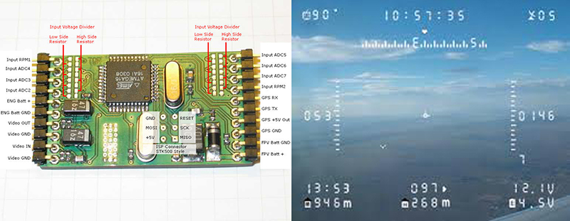
Is a small electronic component that gets installed between the fpv camera and the video transmitter. Its function is to display additional information, by overlaying it into the camera’s picture. These information are some essentials for flying, such as height, speed, heading, voltage, power consumed and many more.
The real power of the OSD shows up in a more sophisticated builds/projects, that use waypoint navigation and other automated advanced functions.
03
> > > > > > > > Part three - How a drone flies
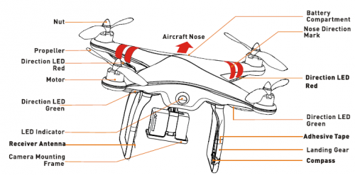
P-I-D correction algorithms
There are three parameters that a pilot can adjust to improve better quadcopter stability > > >P.I.D
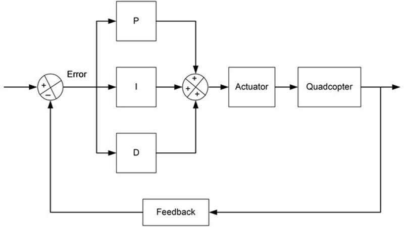
There are 3 algorithms in a PID controller, they are P, I, and D respectively. P depends on the present error, I on the accumulation of past errors, and D is a prediction of future errors, based on current rate of change. These controller algorithms are translated into software code lines.
ACROBATIC FLIGHT
- requires a slightly higher P
- requires a slightly lower I
- increase D
GENTLE SMOOTH FLIGHT
- requires a slightly lower P
- requires a slightly higher I
- decrease D
HERE YOU CAN SEE A VIDEO EXAMPLE OF DIFFERENT SETTINGS
MOVEMENTS OF FLYING VEHICLES
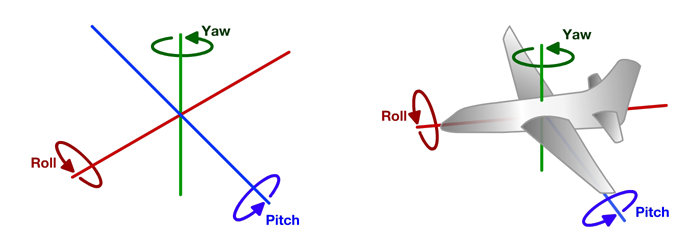
TRANSMITTER MODES / HOW TO DRIVE THE VEHICLE
The remote control has some common main functions. For full autonomous operation at least six channels are required,with more you can assign more functions.
- Throlle > > > up/down in multicopters
- Yaw / Rudder > > > rotation on the Z axes
- Roll / Ailerons > > > rotation on the X axes
- Pitch / Elevator > > > rotation on the Y axes
- Mode switch1/2/.. > > > function assignation
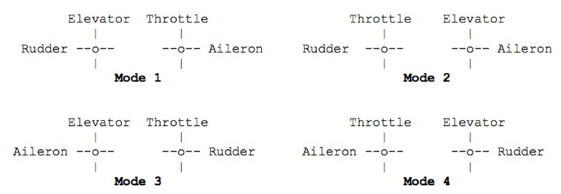
You'll see from the above 4 modes but few people fly anything other than Mode 1 or 2. There are also modes 5-8 where the elevator is reversed so the model goes up when you push the stick forward (yes, I have come across somebody who flew this way, he had no help when he started out and it made sense to him)
There is no right or wrong way to learn, the percentages of people flying on each mode varies in the UK and USA it is mainly mode 2, Europe and Australia mode 1.
Most people the world over fly mode 1 or 2, so which should you chose?
The technical answer is that for aircraft mode 1 is considered better as it separates the two main controls (aileron and elevator), which helps when flying precision aerobatics, also helps turning in racing multirotors as you mainly rotate with the rudder aka yaw, but there are many top competitive aerobatic pilots flying mode 2.
Mode 2 is considered easier to learn as you predominately use your right hand and most people are naturally right handed.
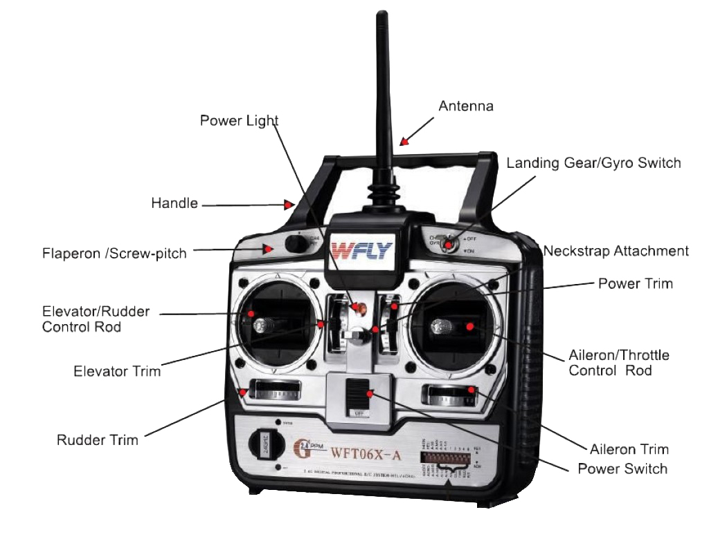
All the transmissions between the remote and the receiver come in a "coded" frecuency the normal outputs for Radiocontrol frecuencies are CPPM / PPM sum signal, S-BUS or Spektrum Satellite. They are mainly propietary brand modulations, so if you get a Spektrum you can only use spektrum products or modulation compatible one.
Most people are using 2.4GHz technology, but we can still encounter some “old” 35MHz and 72MHz systems.
We carefull wich one you buy the first time! Some are more expensives have more options than others.
More commons modulations are :
- Spektrum and DSM Compatible Receivers
MOTORS BASIC CONCEPTS
A multicopter is more efficient when it’s lighter, so you need to pick a good battery that has good capacity but light weight.Although you can choose the motors for the weight you want to carry, it’s always a good idea to carry as little weight as possible. Lightness is very important to all aircraft because any excess weight could reduce your battery life and maneuverability
A rule of thumb is Required Thrust per motor = ( Weight x 2 ) / 4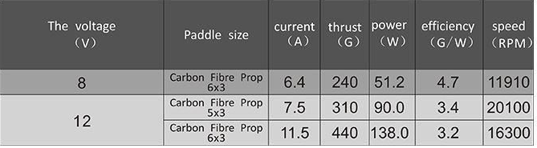
Brushed vs Brushless
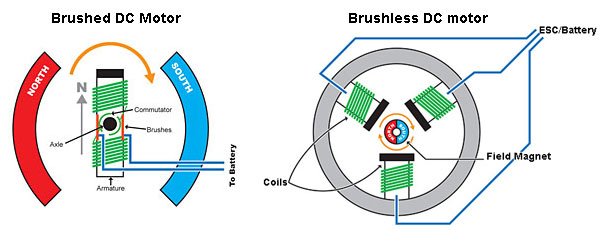
Advantage of brushed motors
-Inexpensive
-Simple wiring
-No need specialized ESC
Advantages of brushless
-Very low maintenance
-Higher speeds achievable
-Higher efficiency
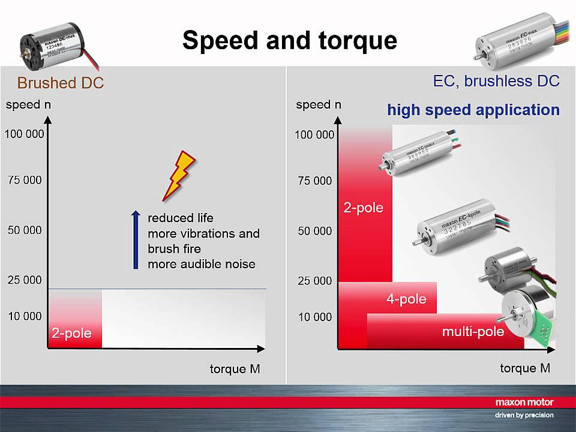
Motors used these days are almost exclusively of the “brushless” variety. That equates to minimal friction.A cylindrical shell of magnets rotates on precision bearings around a core of tightly and neatly coiled wire.
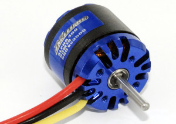
Battery and weight is not the only factor we need to consider when it comes to Efficiency, there is also motor efficiency. When choosing motors, apart from motor KV and thrust, we also need to look at Watt’s and efficiency.
MATCHING AN ESC TO YOU MOTOR (Electronic Speed Controller)
Now that we have confirmed that this motor is suitable for our application, we look at the Amp draw for our chosen motor/battery/propeller. In our case, this is maximum of 7.5A for a 5x3 prop, and 11.5A for a 6x3 prop. Since in our build we chose the 5x3 propellers, so we will need to use an ESC that is rated over 7.5A, so an 12A ESC would be a good choice for this motor/propeller running on a 3S battery.
PROPELLERS AND ROTATION
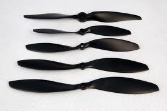
A quadcopter uses two clockwise(CW) and two counter-clockwise(CCW) propellers. Propellers are classified by length and pitch. For example 9×4.7 propellers are 9 inch long and has a pitch of 4.7.
Generally, increased propeller pitch and length will draw more current. Also the pitch can be defined as the travel distance of one single prop rotation. In a nutshell, higher pitch means slower rotation, but will increase your vehicle speed which also use more power
.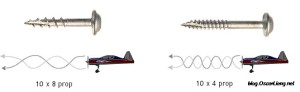
There are a few different types of propellers, such as plastic, carbon fibre etc.
A higher pitch propeller moves greater amount of air, which could create turbulence and cause the aircraft to wobble during hovering. If you notice this with your quadcopter, try to choosing a lower pitched propeller.
When it comes to the length, propeller efficiency is closely related to the contact area of a prop with air, so a small increase in prop length will increase the propeller efficiency. (pretty much like swimmers with larger hands and feet can swim faster, but also more tiring for them)
The orientation of the propeller depends mainly on your frame configuration.Each propeller needs an "opposite" so the torque that it produces is eliminated by another one.
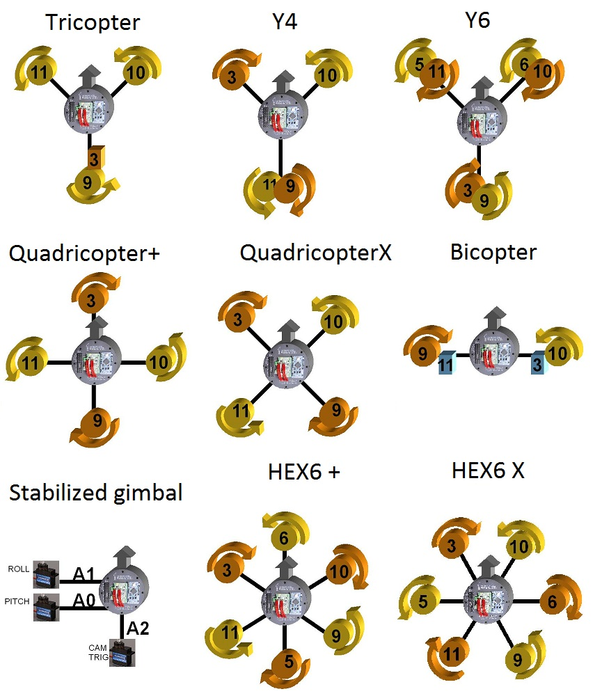
BATTERIES "hello LiPo"
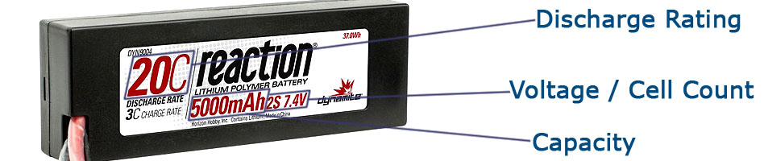
LiPo batteries (short for Lithium Polymer) are a type of rechargeable battery that has taken the electric RC world by storm, especially for planes, helicopters, and multi-rotor. They are the main reason electric flight is now a very viable option over fuel powered models.
> > > LiPo batteries are light weight and can be made in almost any shape and size
> > > Rc LiPo have large capacities, meaning they hold lots of energy in a small package
> > > Rc LiPo have high discharge rates to power the most demanding electric motors
VOLTAGE
Unlike conventional NiCad or NiMH battery cells that have a nominal voltage of 1.2 volts per cell, LiPo battery cells have a nominal voltage of 3.7 volts per cell.
3.7 volt battery = 1 cell x 3.7 volts (1S)
7.4 volt battery = 2 cells x 3.7 volts (2S)
11.1 volt battery = 3 cells x 3.7 volts (3S)
14.8 volt battery = 4 cells x 3.7 volts (4S)
18.5 volt battery = 5 cells x 3.7 volts (5S)
22.2 volt battery = 6 cells x 3.7 volts (6S)
29.6 volt battery = 8 cells x 3.7 volts (8S)
37.0 volt battery = 10 cells x 3.7 volts (10S)
44.4 volt battery = 12 cells x 3.7 volts (12)
Unlike conventional NiCad or NiMH battery cells that have a nominal voltage of 1.2 volts per cell, LiPo battery cells have a nominal voltage of 3.7 volts per ceLL
CAPACITY
Capacity indicates how much power the battery pack can hold and is indicated in miliamp hours (mAh). This is just a fancy way of saying how much load or drain (measured in milliamps) can be put on the battery for 1 hour at which time the battery will be fully discharged. 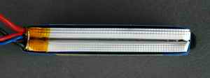
The main thing to get out of this is if you want more flight time; increase the capacity of your battery pack. Unlike voltage, capacity can be changed around to give you more or less flight time.
DISCHARGE RATE
Discharge rate is simply how fast a battery can be discharged safely. Remember that ion exchange thing further up the page? Well the faster the ions can flow from anode to cathode in a battery will indicate the discharge rate. In the RC LiPo battery world it is called the “C” rating.
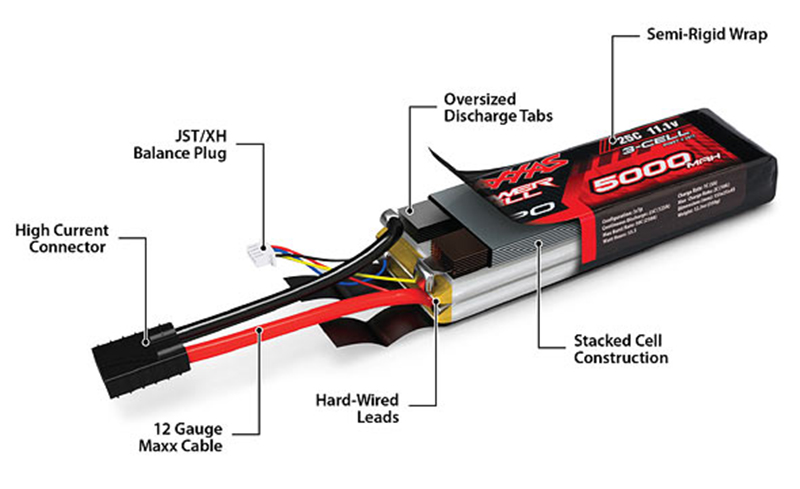
Most RC LiPo Battery packs will show the continuous C rating and usually a maximum burst C rating as well. A burst rating indicates the battery discharge rate for short bursts (a few seconds maximum) of extended power. An example might be something like "Discharge rate = 25C Continuous/50C Bursts".
04
> > > > > > > > Part four - design the frame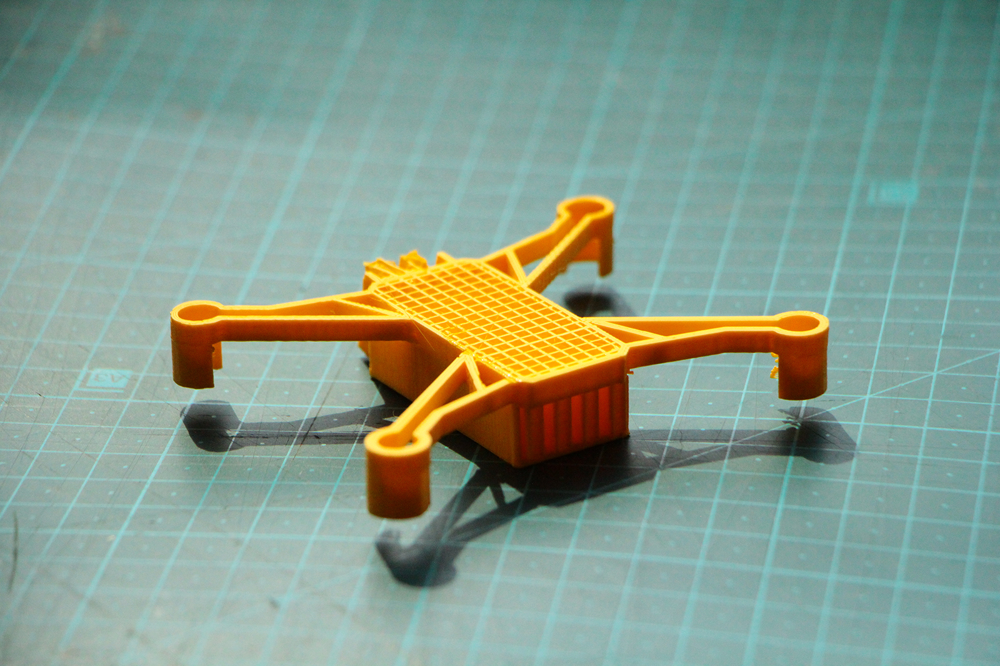
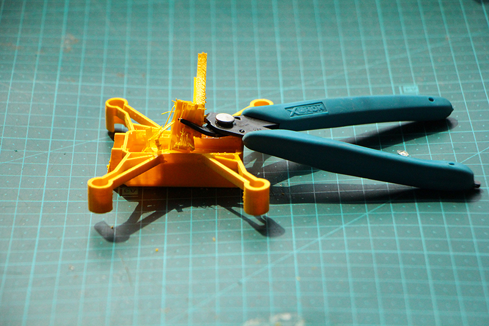
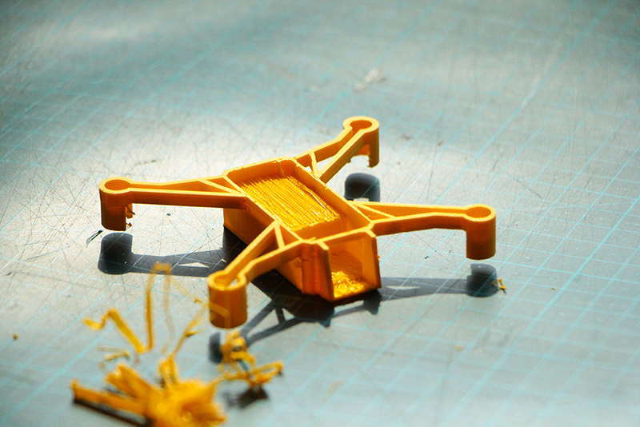
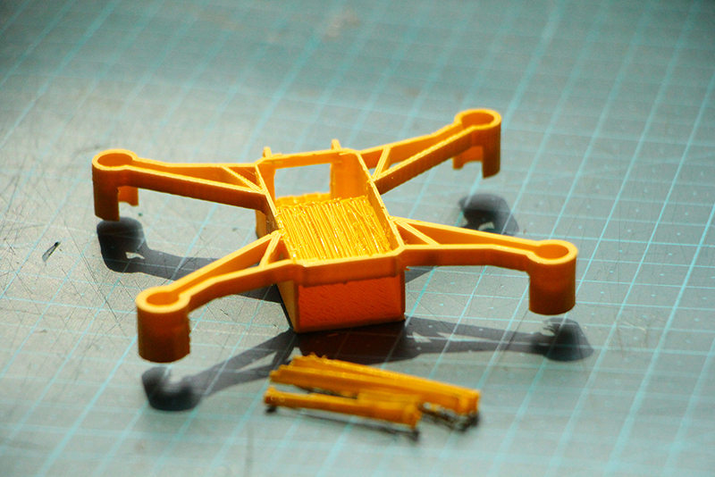
05
> > > > > > > > Part five - fpv-1 "video transmitter"
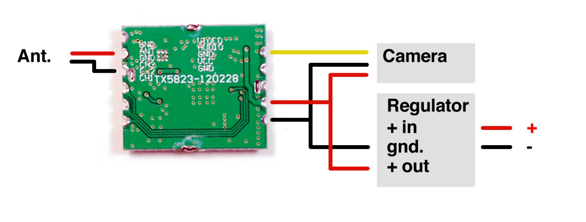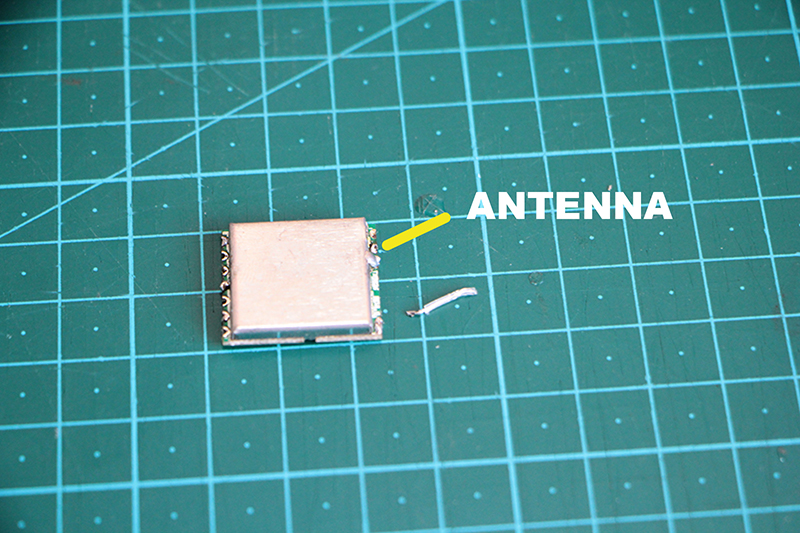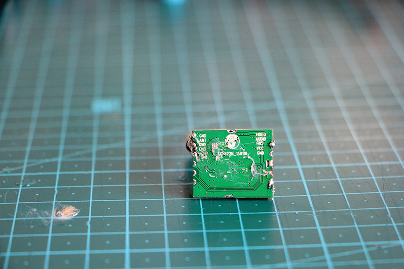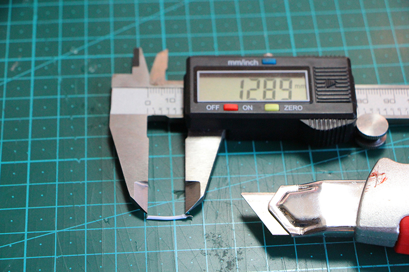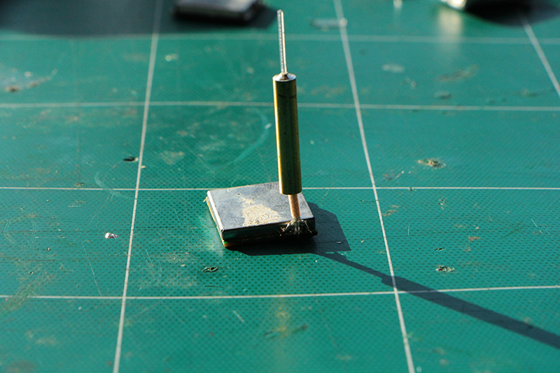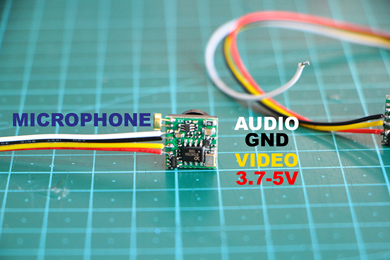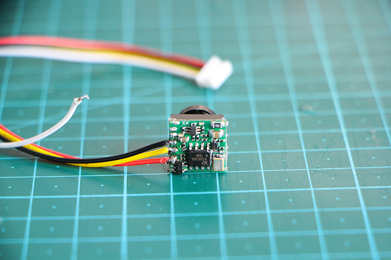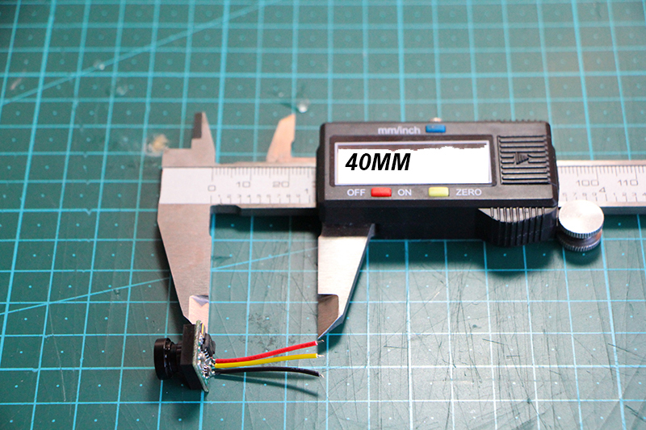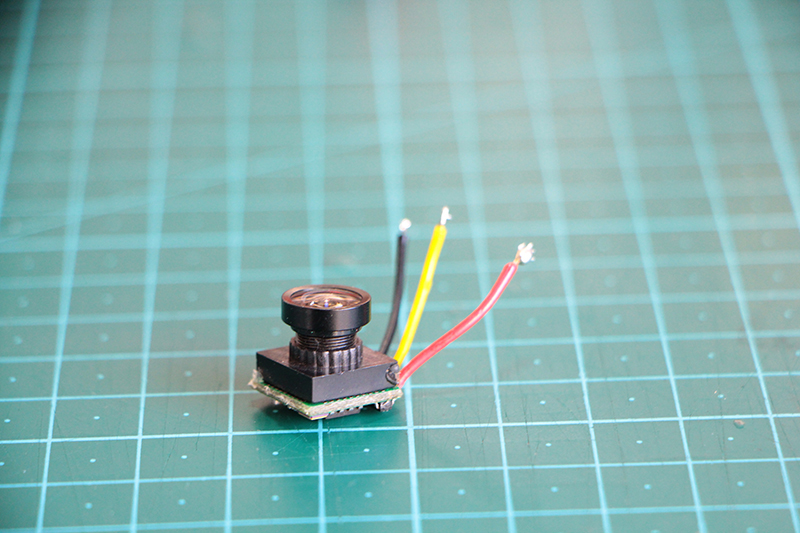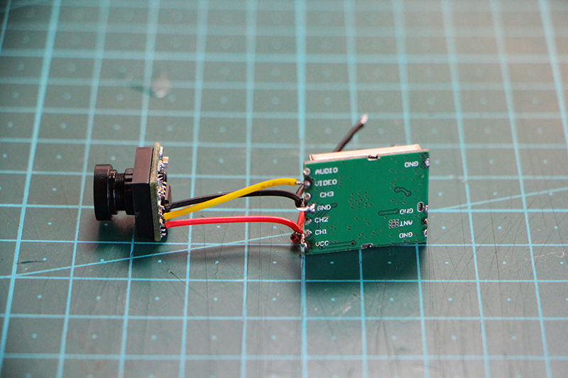
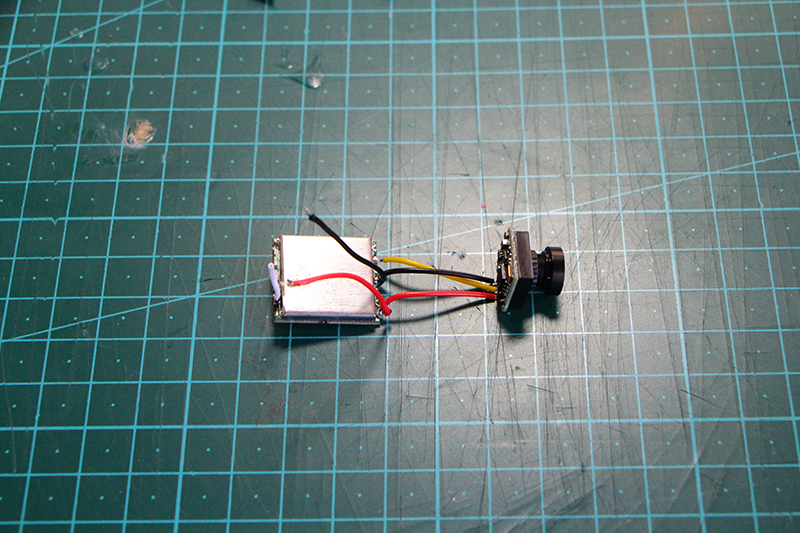+
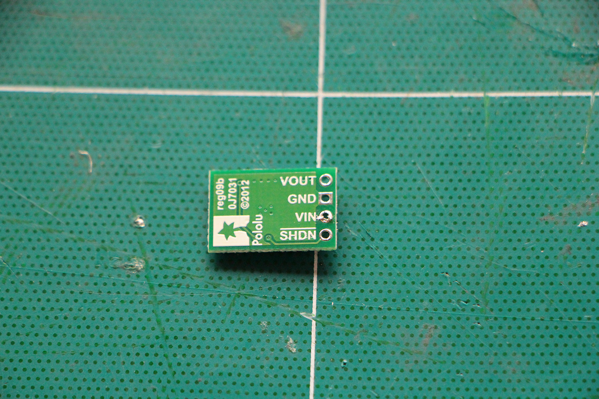
06
> > > > > > > > Part six - fpv-2 "video receiver"
07
> > > > > > > > Part seven - fpv-3 "googles/ground station"
08
> > > > > > > > Part eight - final assembly
09
> > > > > > > > Part nice -let's fly!
All the contents are created by Eduardo Chamorro and are licensed under a Creative Commons Attribution-NonCommercial-ShareAlike 4.0 International License.